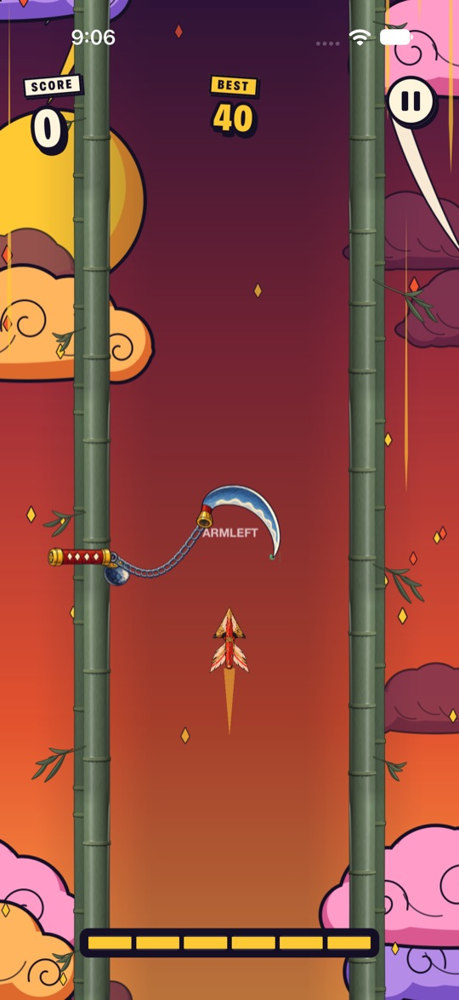

One touch
Tap anywhere to surge. That's the whole control scheme, and every crossing comes down to timing.
~/adhd/gate-relay $ ./run --portrait
A one-touch timing game for iPhone, played in portrait. Tap to surge. Time each crossing as the gates open and close.
iphoneswiftuispritekit
in development · not on the App Store yet
Your ship runs a bamboo corridor, gate after gate. Hands clap shut, blades swing, fans fold open and lion-dogs lunge from the walls. One touch is all you get: tap to surge, and time each crossing for the moment the way is clear.
Surge burns fuel, so save some. Every so often a torii blocks the whole corridor, and only a surging ship can break through it.
Tap anywhere to surge. That's the whole control scheme, and every crossing comes down to timing.
Surging burns a six-block tank. Close calls refill it, scaled by how tight the crossing was.
Some gates have no gap at all. Only a surging ship smashes through them.
Prayer hands, katana, kusarigama, folding fans, komainu, kunai, oni masks and more, each with its own timing.
The scene changes every 10 gates: a dawn sky, sakura, rolling waves, sunset clouds and a lantern-lit night.
After a wipeout, retry the same course to master it, or roll a new one.
Haptics, sound effects and music toggles, plus Reduce Motion / Effects, which turns off spins, sway and flicker.
SwiftUI menus over a SpriteKit playfield, driven by a fixed-step simulation at 120 steps a second.





In development. Gate Relay is a working title. The game isn't on the App Store yet, and there's no release date.
The clips on this page are real gameplay recorded from the iPhone simulator.